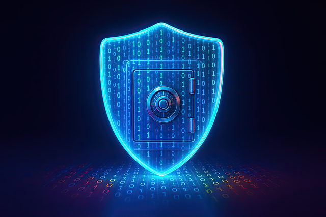
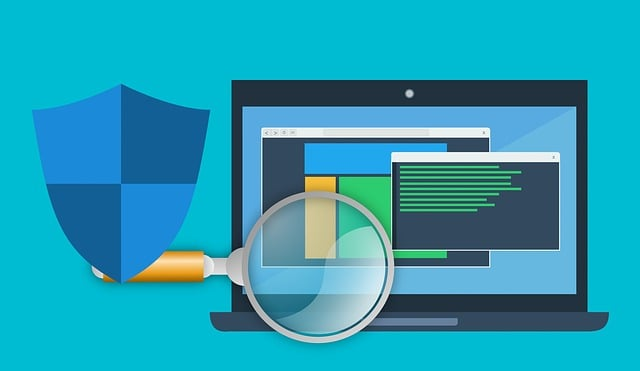

Dans les années 1980, les premiers virus informatiques se propageaient via des disquettes et causaient des ravages dans les entreprises et chez les particuliers. Face à cette menace grandissante, les antivirus sont nés pour protéger les systèmes informatiques.
Aujourd'hui, avec des milliards d'appareils connectés à Internet et des cyberattaques de plus en plus sophistiquées, les antivirus sont devenus indispensables à notre sécurité numérique.

Le premier virus informatique, "Creeper", est apparu en 1971 sur ARPANET. Il affichait simplement le message "I'm the creeper, catch me if you can!" Sans intention malveillante, il a néanmoins inspiré la création de "Reaper", le tout premier antivirus.
Les années 1990 ont vu l'explosion des virus avec l'arrivée d'Internet. Des menaces comme "Melissa" (1999) ou "ILOVEYOU" (2000) ont infecté des millions d'ordinateurs en quelques heures, causant des milliards de dollars de dégâts.
Aujourd'hui, les cybercriminels utilisent des ransomwares qui chiffrent toutes vos données et exigent une rançon pour les débloquer. WannaCry (2017) a paralysé des hôpitaux, des entreprises et des administrations dans le monde entier.
| Type de menace | Mode d'action | Exemples célèbres |
|---|---|---|
| Virus | Se réplique en infectant d'autres fichiers | Melissa, ILOVEYOU |
| Ver (Worm) | Se propage automatiquement sur le réseau | Conficker, Blaster |
| Cheval de Troie | Se déguise en logiciel légitime | Zeus, Emotet |
| Ransomware | Chiffre les données et exige une rançon | WannaCry, Locky |
| Spyware | Espionne et vole vos informations | Pegasus, FinFisher |
| Rootkit | Se cache profondément dans le système | Stuxnet, Sony BMG |

Les antivirus modernes sont devenus des suites de sécurité complètes. Ils ne se contentent plus de détecter les virus, mais offrent une protection globale contre toutes les menaces numériques.
Ils intègrent désormais des pare-feu qui filtrent le trafic réseau, des systèmes anti-phishing qui bloquent les sites frauduleux, des gestionnaires de mots de passe sécurisés, et même des VPN pour protéger votre vie privée en ligne.
Norton et McAfee, pionniers des années 1980, restent des références. Kaspersky, fondé par un ancien ingénieur du KGB, est réputé pour son expertise technique. Bitdefender et ESET excellent dans la détection proactive. Microsoft Defender, intégré à Windows, offre une protection gratuite et performante pour les particuliers.
Le marché des antivirus évolue constamment. Certains privilégient la légèreté et la rapidité, d'autres misent sur une protection maximale. Le choix dépend de vos besoins : usage personnel, professionnel, gaming, ou navigation intensive.
Les antivirus ont parcouru un long chemin depuis Reaper en 1971. Face à des menaces toujours plus sophistiquées utilisant l'intelligence artificielle et ciblant nos smartphones, objets connectés et même nos voitures, ils restent notre première ligne de défense dans un monde numérique de plus en plus dangereux. La cybersécurité n'est plus optionnelle, c'est une nécessité.
Pour aller plus loin : Regarder une vidéo explicative sur les antivirus